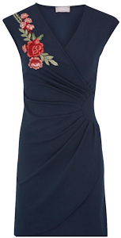
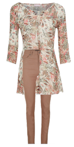

|
"Help, help, help, ik word geknapkit.” “Fleur, wanneer ga je het eens leren? Het is gekidnapt.” “Calla, dat blijft gelijk voor mij. Het resultaat is hetzelfde.” “Fleur hou toch eindelijk eens op met zeuren. Je krijgt nieuwe kleding om te showen in de etalage. Roos, dadelijk zijn wij aan de beurt. Ik zal blij zijn dat we de winterkleding mogen uitdoen en dat we lentekleding krijgen.” “Calla, weet jij iets van de lentekleding van dit jaar?” “Roos, het zal overwegend donkerblauw zijn, meestal met grote printen ofwel effen. Maar andere kleuren zullen er ook weer kunnen gedragen worden.” Ik ben ervan overtuigd dat het mooi zal zijn.” “Dat denk ik ook, Roos.” “Calla, ze komen ons nu halen. Ik ben heel nieuwsgierig.” “Je bent niet de enige en ons Fleurke zal weer jammeren dat wij mooiere kleding dragen dan zij.” “Niets van aantrekken, Roos. Zo is ze nu eenmaal. Je moet haar een uurtje laten uitrazen, dan is ze weer de oude Fleur.”
De etaleur haalt het wintergereedschap uit de etalage en begint zijn lente attributen uit te stallen. Er komt deze keer een heel grote poster met een idyllisch landschap. Niet al te druk, want die poster moet de aandacht van de poppen naar zich toetrekken. Dan zet hij een tafeltje neer met drie stoelen. Hij dekt de tafel met allerlei lekkere (geen echte natuurlijk) dingen. De etaleur is zeer tevreden over zijn werk. De chef van de zaak keurt de etalage altijd. Hij vindt dat er hier en daar wat diertjes mogen toegevoegd worden. Inderdaad, de chef heeft gelijk. Daar komen de mannequins terug uit de achterkamer in hun allernieuwste collectie.
|  |
 |
 |
| een gedrapeerde wikkeljurk met geborduurde bloemen |
Broek met hoge taille en bijpassende tuniek, gemaakt in kreukvoile |
De blouse heeft een prachtige hals met geborduurde lovertjes. De rok is in Incastijl |
| Voor Calla |
Voor Roos |
Voor Fleur |
“Waw, de etaleur heeft er echt iets moois van gemaakt.” “Fleur? Wat scheelt er met jou? Deze keer geen opmerkingen of dingen die je afschuwelijk vindt?” “Neen, dit is nu een etalage waar de mensen naar komen kijken. Ohla, de eerste mensen blijven al staan. En die diertjes, die zijn zo lief. Vogeltjes in de lucht, een eekhoorntje dat op een nootje knabbelt. En Roos, jij hebt zelfs een lieve grote Berner Sennen naast je staan.” Roos daarentegen is niet zo gelukkig, zij moet langs Calla gaan staan terwijl de anderen mogen zitten. “Roos, je moet daar niet ongelukkig om zijn. Bij jou zien de eventuele kopers je hele ensemble en het staat je verdomd heel goed. En je Berner Sennen, die kun je ook nog knuffelen. Dames, zeker niet onbelangrijk; wij kunnen onze hobby weer uitoefenen: mensen-kijken!” Zegt Fleur heel oprecht.
“Och, zie daar een mama met haar kleutertje.” Ze blijven even voor de etalage staan. “Kijk mama, die lieve diertjes, dat konijntje in de hoek, dat wil ik hebben.” “Xander dat hoort bij de etalage, die diertjes zijn niet te koop. Wij moeten daarvoor naar een andere winkel gaan. We gaan een afspraak maken.” Mama bukt zich zodat ze op ooghoogte van Xander zit. “Weet je Xander … Xander, kijk mij aan. Ik maak een foto van dat konijntje en dan gaan we naar de speelgoedwinkel om datzelfde konijntje te kopen. Maar … jij gaat je als een grote, brave en verstandige jongen gedragen en bij me blijven. Is dat afgesproken Xander? Xander wat heeft mama net tegen je gezegd?” “Dat ik braaf moet zijn en dan krijg ik dat konijntje uit de andere winkel.” “Heel goed, jongen.” Even later komt mama alleen naar buiten. Ze heeft het kleedje van Fleur gekocht. En kleuter Xander schreeuwde, tierde en schopte keet. Hij wilde en zou dat konijntje hebben. Mama kent haar zoon goed. In plaats van hem terecht te wijzen, gaat ze gewoon naar buiten en blijft aan de zijkant van de winkel staan. Nog geen twee minuten later komt Xander met een huilend gezichtje naar buiten, zoekend naar zijn mama. “Mama het spijt mij zo erg, ik had dat niet mogen doen. Maar krijg ik toch nog mijn konijntje?” “Omdat je je excuses hebt aangeboden, krijg jij dat konijntje van mij.” zei een ontroerde mama. Fleur, Calla en Roos krijgen zowaar ook traantjes van het lieve tafereeltje.
Ineens zegt Roos: “Mensenlief, daar heb je de familie Flodder. Vader, moeder en vijf kinderen tussen de tien en zeventien jaar. Hopelijk komen ze hier niet binnen, want onze kleding is zeker niet aan hen besteed. Calla repliceerde: “Roos, voor ons is iedereen gelijk. Maar of onze kleding in de smaak valt bij hen, dat is een ander paar mouwen.” Van de familie komt enkel de moeder binnen. En ze is zeer snel weer buiten. “Zie je wel, daar gaat ze al. Wij zijn te sjiek voor hen” antwoordt Roos. “Dames, ze heeft wel een draagtas van onze winkel. Oh, ze laat de aankoop aan haar man zien. Dat is dat pakje dat een binnen-mannequin draagt. Mevrouw Flodder, u heeft een terecht goede keuze gemaakt. Het staat u beeldig.” merkt Fleur cynisch op.
“Hei, waar komt die troep mensen vandaan?” vraagt Fleur zich af. ”Dat zijn Chinezen die vandaag Hasselt komen bezichtigen. Zie je die fototoestellen niet? Ze doen nu aan window-shopping,” antwoordt Roos. “Hoe zie je dat dan?” “Fleur, omdat er een gids vooraan gaat en uitleg geeft over de gebouwen hier in onze mooie stad. Ze gaan nu richting Grote Markt. Blijkbaar trekt onze etalage veel aandacht. Enkelen blijven staan en maken foto’s van onze etalage. Toch tof hé.” “Inderdaad Roos.”
“Hei dames, kijk eens naar jullie linkerkant, naar dat koppel met die hond. Sapperdekriek, dat is een leeuw. Ik dacht dat het verboden was om wilde dieren in huis te houden.” Gelukkig weet Roos veel over dieren en ze legt aan haar twee  vriendinnen uit wat voor iets die ‘leeuw’ is. “Lieve schatten, dat is een Leonberger.” “Een Leonberger?” vraagt Calla, “daar heb ik nog nooit van gehoord. Hier zie je alleen maar van die ‘hielenbijters’. Wat een pracht van een dier. Roos wat weet je nog over dat ras? Ik ben enorm nieuwsgierig.” En Roos vertelt verder: “In het plaatsje Leonberg in Würtemberg (Duitsland) is deze brave hond voor het eerst gefokt. De rassen waar de Leonberger zijn bestaan aan te danken heeft zijn de Sint-Bernard, Newfoundlander en Pyrenese berghond. Ze bestaan officieel sinds 1846. De Leonberger lijkt op een leeuw, zeker de reuen. Behalve zijn imponerend uiterlijk is het ook een intelligente, leergierige hond, die bekend staat om zijn kindvriendelijkheid. Hij of zij is een ideale huishond; rustig en toch speels, trouw en vriendelijk. Een echte brave, lieve en aanhankelijke reus. Ik kan nog veel meer vertellen, maar dat is voor de volgende keer, als er weinig volk op straat is en wij ons vervelen.” vriendinnen uit wat voor iets die ‘leeuw’ is. “Lieve schatten, dat is een Leonberger.” “Een Leonberger?” vraagt Calla, “daar heb ik nog nooit van gehoord. Hier zie je alleen maar van die ‘hielenbijters’. Wat een pracht van een dier. Roos wat weet je nog over dat ras? Ik ben enorm nieuwsgierig.” En Roos vertelt verder: “In het plaatsje Leonberg in Würtemberg (Duitsland) is deze brave hond voor het eerst gefokt. De rassen waar de Leonberger zijn bestaan aan te danken heeft zijn de Sint-Bernard, Newfoundlander en Pyrenese berghond. Ze bestaan officieel sinds 1846. De Leonberger lijkt op een leeuw, zeker de reuen. Behalve zijn imponerend uiterlijk is het ook een intelligente, leergierige hond, die bekend staat om zijn kindvriendelijkheid. Hij of zij is een ideale huishond; rustig en toch speels, trouw en vriendelijk. Een echte brave, lieve en aanhankelijke reus. Ik kan nog veel meer vertellen, maar dat is voor de volgende keer, als er weinig volk op straat is en wij ons vervelen.”
“Kijk daar: in de verte zie ik Marianne en Marleen. Zij gaan binnenkort trouwen. Ik snap niet dat ze nu al naar het gemeentehuis willen stappen, ze zijn nog maar een half jaar samen. Dames, ik wed voor een fles champagne dat Marianne een broekpak gaat dragen. Ik heb haar nooit anders gekend dat zij het woord had als ze ons hier voor de etalage kwamen keuren. Ik vind die Marianne zo bazig, brrr. Maar toch … Ik zou hen toch graag in het gemeentehuis willen zien.” “Fleur, nu zaag je toch weer. Je weet dat het onmogelijk is. Wij zijn etalagepoppen en wij kunnen enkel doen wat de etaleur met ons doet. Nietwaar Calla?” “Inderdaad Roos”
“Calla, zou er geen toverpoeder bestaan? De elfjes van de Kerstman hebben toch ook dat magisch poeder, zodat ze door niemand gezien of gehoord kunnen worden. Ik heb dat ergens in een kortverhaal gelezen. Of heb ik dat gehoord van Immi en Eppi? Ik weet het niet meer.”
“Fleur, jij hebt toch een levendige fantasie. Natuurlijk zou ik dat ook graag willen. Ik denk dat alle mannequins dat wel willen. Maar wij hebben niemand die boven ons staat, zoals de elfjes. En dat toverpoeder zal zeker niet bij ons werken omdat wij ander materiaal zijn. Laten we maar gewoon hier blijven. We staan, zitten of liggen lekker warm. We worden beschermd tegen de zon, regen en sneeuw. Of wil je liever een binnen-etalagepop zijn?” plaagt Calla haar. “Oh nee, alsjeblieft, doe me dat niet aan. Hier aan het raam is het veel leuker. We zien veel mensen, we kunnen over hen roddelen, zonder dat zij dat horen. Eigenlijk hebben we een leven als God in Frankrijk. Dat kunnen jullie toch niet tegenspreken?” “Je hebt gelijk” antwoordt Calla. Ook Roos beaamt hetzelfde.
“Lieve meiden, het is bijna zes uur. Dadelijk sluiten ze de winkel en de lichten worden gedoofd. Ook hier in de etalage. Wij staan in het donker en niemand zal nog naar ons omzien. Maar morgenvroeg kunnen we weer mensen-kijken. Eigenlijk hebben wij vandaag toch weer speciale mensen én dieren gezien. Mij heeft het goed gedaan. Het was een interessante dag.” sluit Roos af. “Ja, voor mij ook.” zegt Calla. “Ik vond het ook een fijne dag, het is alleen spijtig dat er geen etalagepop-poeder bestaat, dan konden we in deze chique kleren eens goed op stap gaan en de bloemetjes met groot vertier buiten zetten.” “Ja ja, Fleur, droom maar verder. Het is genoeg geweest voor vandaag. Tot morgen!”
“Tot morgen, lieve dames, zonder ons magisch poeder”
“Fleur!!”
|